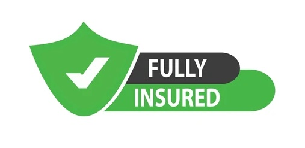

Frequently Asked Questions
How often should I clean my solar panels?
Most manufacturers require your solar panel array be cleaned and inspected every 12 months for warranty purposes. Annual inspections identify damage such as cracked glass, burnt out cells, loose fixings, loose cabling and deteriorating isolator switches. These issues can cause your system to underperform and are also a potential electrical and fire hazard. We recommend cleaning every 6-12 months if you live in an area close to construction sites or farmland where there is a lot of dust in the air or if you live in a heavily treed area where tree pollen, bird and bat droppings are prevalent. Another good time to have your panels inspected is after a large storm, where heavy wind can cause panel fixings to come loose, wiring to become detached and panels can be impacted by hail or falling tree debris.

Do you use chemicals?
No, we use deionised water as per manufacturer recommendations. Normal water carries impurities that can leave spots and scale deposits on the panels which can, over time, affect the anti-reflective (AR) coating on panels. We use a water filter that has a 2 stage filtration system. The first stage is 5 micron Carbon filter that removes any sediment, the second stage has a resin bed of positively and negatively charged beads that attact Calcium and Magnesium ions, leaving purified deionised water. Deionised water is free of minerals and impurities so it also better at picking up those impurities off your panels and removing grime, leaving a streak free finish as opposed to normal tap water.

Are you insured?
Yes, we have 20 million dollar public liability insurance to cover all services provided.
